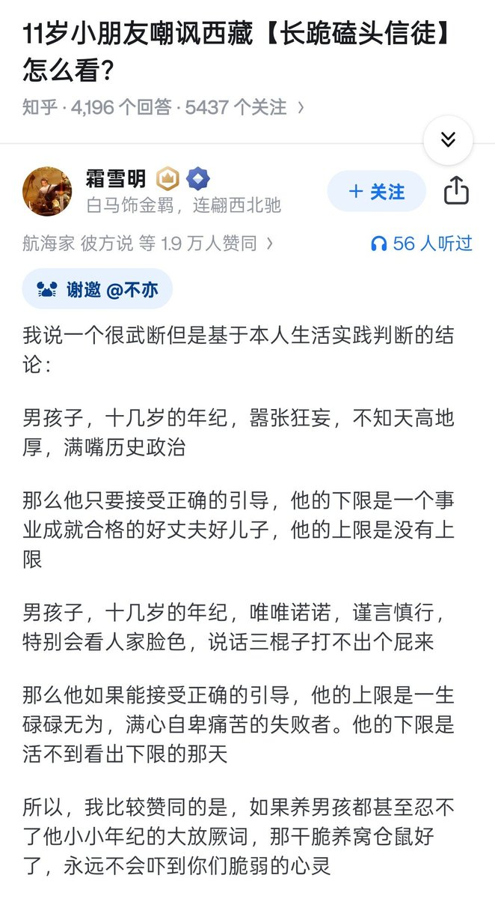

f hv
@fhv932189957574
你凭什么否定人家的人格和信仰，小b崽子和发贴的全部给我飞起来，尊重没妈教你，人家磕头关你屁事，你可以不信，你可以正常的批判，你嘲讽你妈呢，骂你孤儿孤儿罪不至此，你是小孩就免死金牌了，小孩这样就也不是大事但怎么能认为可以这样做完全没事完全正确，还小孩唯唯喏喏就是自卑的失败者，给你妈杀了就不唯喏了，人家什么性格关你屁事，不知天高地厚的见证嘉豪还多牛逼似的，见证是小孩的自由，无论是嚣张还是胆小但不能成为定言未来的理由，放厥词不等于坏事但他妈怎么能成为好事，教育在哪里，知乎一群sb国楠

lidang 立党 （劝人卖房/学CS/买SP500/纳100/OpenAI/Anthrop第一人）
@lidangzzz
https://t.co/8a4RuEJJHq